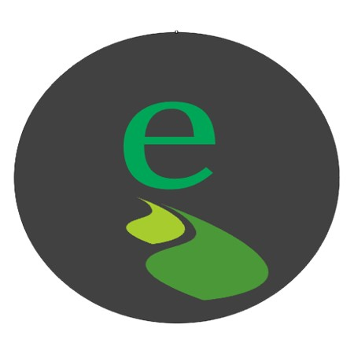
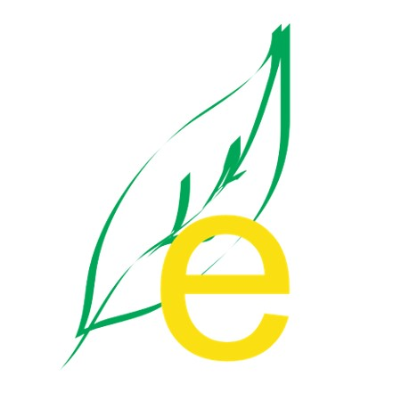
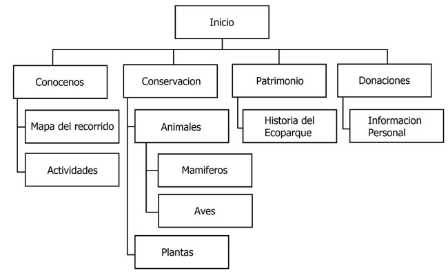

(1) La actividad principal es la comprensión la importancia de conservación de las especies y ambientes autóctonos. El objetivo de la página web es la comprensión del usuario con respecto a lo que ofrecemos y hay dentro de la instalación (ecoparque). El concepto en general serán los animales autóctonos. Esperamos atraer al público mediante la creación de redes sociales, Instagram y Facebook serán las principales entre otras. Somos una empresa de servicios ya que brindamos la educación a los visitantes con respecto a las especies autóctonas del país.
(2) Nuestro público objetivo es de un rango amplio, ya que el aprendizaje sobre nuestras especies es para cualquiera, ya sea su sexo, nacionalidad o edad.
(3) Logo:
Paleta de colores:

Favicon:
Imagen a transmitir : Lo que queremos transmitir es la conservación ,protección, cuidado y bienestar animal, conexión con la naturaleza ,educación y conciencia. También mostrar la imagen de un lugar que puede ser confortable siempre que las personas deseen conocerlo.
Los internautas al visitar nuestra pagina web deben reconocer que la pagina se centra en un recorrido turístico hacia la naturaleza y el conocimiento de algunos de los animales en nuestro espacio, valorar los esfuerzos que tenemos para proteger la vida silvestre de ellos.
Palabras clave : ecoparque,animales,especies
Dominio Web: www.ecoparqueverde.com
Estilos de texto : PROCIONO , DM SANS, ASUL
(4) Arbol:
Inicio: Damos la bienvenida a nuestra pagina al usuario, siendo lo primero que verá una vez entre a nuestro sitio Web.
Conócenos: Categoría de la página donde el usuario podrá ver información del Ecoparque.
Mapa del recorrido: Sección de la categoría “Conócenos”, donde el usuario podrá ver el recorrido de lo que sería todo el Ecoparque,como las distintas zonas, animales, ubicaciones, etc.
Actividades: Sección de la categoría “Conócenos”, en la cual mostramos las diferentes actividades y cosas que se pueden hacer dentro del Ecoparque.
Conservación: Categoría de la página la cual deja observar fotos de algunos de los animales y plantas dentro del Ecoparque.
Animales: Sección de la categoría “Conservación”, en la cual se observa fotos de algunos de los animales dentro del Ecoparque.
Esta Sección se divide en dos secciones más, las cuales muestran los animales que son Mamíferos y los animales que son Aves.
Plantas: Sección de la categoría “Conservación”, en la cual se observa fotos de algunos de las plantas dentro del Ecoparque.
Patrimonio: Categoría que explica la historia y pasado del Ecoparque, desde sus inicios hasta el día de hoy, y que también justifica su existencia.
Donaciones: Categoría que sirve para que los usuarios que quieran hacer donaciones a la pagina para que nos podamos encargar de ayudar al ecoparque y sus animales
(6) Diseñador UX/UI: Leslie Flores
Maquetador: Tomas Novelli
Programador: Nicolas Massimino
Comunicador Web: Luca Montelongo